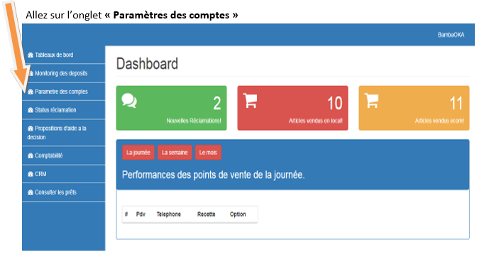
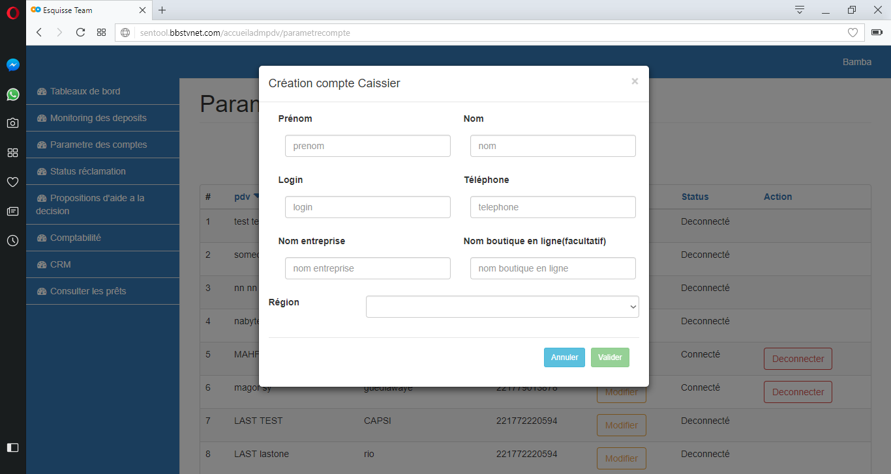

MON GUIDE D'UTILISATION
Pour toute information supplémentaire, merci de contacter le service client de Sentool au
77 226 12 27 - 77 398 18 31 - 77 398 18 58.
Bienvenue sur le guide d’utilisation de votre plateforme Sentool. Ce support vous montre en détail l’utilisation de votre outil du futur.
Vous trouverez toutes les informations nécessaires pour mieux comprendre votre outil et l’utiliser dans toutes ses potentialités.
C’est la première fenêtre que vous allez voir sur votre plateforme.
Elle vous résume les chiffres exacts issus de votre activité par jour/semaine ou mois.
Le tableau de bord vous fait l’état de votre performance journalière en termes d’articles vendus, de transactions effectuées, de réclamations etc.
Ceci est donc votre porte d’entrée pour avoir constamment les informations sur la performance de vos points de vente.
Cette partie vous fait l’état sur la caution qui vous aide à poursuivre votre activité. Vous avez les informations sur l’état de votre caution et vous serez en mesure de juger si la somme disponible est suffisante pour mener votre activité journalière et le cas échéant demander un rechargement instantané.
Vous avez aussi le choix de demander le retrait d’une partie de votre somme déposée en cliquant sur la partie en vert marquée «Demander un retrait » et il vous sera demandé de saisir la somme que vous souhaitez retirer et puis cliquer sur « Valider ». La somme demandée sera versée sur un compte bancaire lié à votre contrat ou sur une carte PosteCash qui pourra être fournie par l’équipe Sentool.
Création du compte Caissier
Après avoir accedé à l’interface Superviseur, il vous reste maintenant à créer le compte caissier pour le gérant de votre point de vente
Après avoir cliqué sur « Paramètres des comptes » vous aurez accès à cette page.
Maintenant cliquez sur « Créer un compte Caissier »

Après avoir cliqué sur « Créer un compte Caissier », vous aurez accès à cet onglet
Mettre les informations du caissier et sur la partie « Login » créer un identifiant pour votre caissier (différent de votre propre identifiant) puis compléter le reste des informations et cliquer sur Valider
Après avoir validé, le caissier recevra un SMS avec son identifiant et son mot de passe que le superviseur pourra modifier sur la partie « Option » de l’onglet « Paramètres des comptes » puis sur « Modifier » pour choisir un nouveau mot de passe.
Premiers pas pour vos caissiers
Après avoir recu un sms d'acces, Allez sur votre navigateur (Google Chrome, Mozilla Firefox, Edge, Opera) et saisissez sur la barre d’outils l’adresse sentool.bbstvnet.com
Après avoir saisi le lien, vous aurez accès à cette page, Veuillez entrer les informations fournis par l’équipe Sentool (Identifiant et Mot de passe) et cliquer sur valider
Après avoir saisi vos informations (identifiant et mot de passe), un SMS contenant un code de confirmation vous sera envoyé.
Veuillez saisir le code ici
Cette partie vous renseigne sur l’état du traitement des réclamations soumis à notre équipe et de vérifier si elles sont traités par rapport à l’ordre d’arrivée.
Vous pouvez voir accéder aux informations suivantes :
- La date de réclamation
- Le nom du point de vente concerné, son adresse et son numéro de téléphone
- Le type de service concerné par la réclamation
- Le message de la réclamation
- L’état d’avancement sur le traitement de la réclamation
Ce service est momentanément indisponible!
Elle vous fournit les informations nécessaires sur l’activité de vos points de vente sous forme de chiffres représentant les charges occasionnées ainsi que les revenues générées par votre activité.
L’outil comptable vous permet de conduire une gestion de caisse, d’effectuer une journalisation complète de l’intégralité de vos activités ainsi que de suivre l’exploitation de vos ressources. Tout cela vous aide à superviser et gérer tous vos points de vente de manière simultanée. Cette supervision vous permet de gérer efficacement l’activité de tous vos points et d’approvisionner les points qui s’approchent du plafond. Cela rend votre activité plus rapide et plus efficiente.
- / L’onglet « Caisse »
vous permet d’avoir un aperçu sur l’activité total de tous vos points de vente pour être en mesure de suivre votre activité et toutes les dépenses qui y sont liées. En tant que propriétaire de points de vente, vous serez en mesure de contrôler les activités de la caisse de votre gérant et pouvoir les approvisionner à temps.
- / L’onglet « Journal »
vous d’avoir à porte de main une liste de toutes les charges inhérentes à votre activité ainsi que les revenues qui sont générés par les activités de tous vos points de vente. Appuyez sur «Lister charges » pour accéder à la liste des charges générées par votre activité.
Appuyer sur « Ajouter charge » et remplissez tous les onglets avec les informations demandées puis enregistrer pour ajouter une nouvelle charge sur la liste déjà établie sur votre base de donnée.
Cliquez sur « Lister Revenus » pour accéder à la liste des revenues qui sont liées à vos opérations au niveau de tous vos points de vente. Vous aurez deux rubriques à savoir les « revenus avec commissions » pour les services financiers qui offrent des commissionnements et « Autres » qui concerne les revenues liées aux autres activités parallèles de vos points de vente (vente de produits, consultance, boutique etc.).
- / L’onglet « Exploitation »
vous permet enregistrer toutes les opérations journalières de l’ensemble de vos points de vente et cela pour tous les produits et services que vous commercialisez. Vous aurez à remplir les champs vides et toutes les données seront conservée sur la base dans laquelle vous aurez accés aux données par jour, année ou une intervalle de temps définie.
Pour les autres produits.
Sur cette partie vous pouvez gérer la gestion du stock des autres produits qui sont commercialisés au niveau de votre point de vente et accéder aux informations saisis sur la base à chaque période pour l’activité concernée.
- / L’onglet « Personnalisation »
vous permet de rendre votre interface utilisable selon vos préférences pour vous permettre de travailler plus facilement et inclure tous les produits et services commercialisés au niveau de votre point de vente.
Vous pouvez :
Ajouter des services en appuyant sur l’onglet « ajouter service » puis saisir les détails sur les champs vides et cliquer sur « ajouter » pour l’insérer tous les produits commercialisés par vos points de vente et d’avoir un contrôle constant sur votre stock dans votre base de données. Vous pouvez ajouter autant de produits selon votre choix en appuyant sur « autre produit ».
L’onglet « Lister service » vous permet de supprimer, de chercher ou de modifier tout service ou produit lié à votre activité. Cette option vous permet de mieux personnaliser votre interface et d’effectuer des mises à jour constantes sur votre base de données personnelles.
Cet outil vous aide à faire un suivi méthodique de votre Gestion Relation Client. La Gestion Relation Client est un outil qui vous permet de gérer votre base de données clients.
Dans le but de vous accompagner à accomplir cette mission, Sentool met à votre disposition cet outil qui vous permet de connaitre vos clients les plus fréquents et de pouvoir faire des promotions ciblées pour tendre vers la fidélisation mais aussi de connaître les clients moins fréquents et les relancer ou mettre en place des stratégies visant à les faire revenir auprès de votre point pour effectuer leurs opérations.
Cet outil vient pour vous faciliter votre travail et rendre votre activité plus rentable. Cet outil vous aide à faire un suivi méthodique de votre Gestion Relation Client.
La Gestion Relation Client est un outil qui vous permet de gérer votre base de données clients. Dans le but de vous accompagner à accomplir cette mission, Sentool met à votre disposition cet outil qui vous permet de connaitre vos clients les plus fréquents et de pouvoir faire des promotions ciblées pour tendre vers la fidélisation mais aussi de connaître les clients moins fréquents et les relancer ou mettre en place des stratégies visant à les faire revenir auprès de votre point pour effectuer leurs opérations.
Cet outil vient pour vous faciliter votre travail et rendre votre activité plus rentable.
- L’onglet « Portefeuille » vous permet d’avoir une base donne clients. Cette base vous donne l’opportunité de mieux connaître votre clientèle. Pour chaque business, la maîtrise de sa base de clients est primordiale pour pérenniser son activité.
- L’onglet « Suivi » vous permet d’effectuer des promotions ciblées pour les clients les plus fréquents en vue de les fidéliser et par la même occasion identifier les clients les moins fréquents et les relancer pour les faire revenir au niveau de notre point de vente.
- Au niveau de l’onglet « Prospection », vous avez la possibilité d’entrer les données de vos nouveaux clients. Si vous avez de multiples points de vente qui commercialisent d’autres produits, vous avez une interface e-commerce qui vous permet de vendre vos produits à une plus grande base de clients et l’onglet prospection vous permet de gérer les clients potentiels et mettre en place des stratégies pour les convertir en clients.
- La partie « Suivi commandes » sert à effectuer un suivi instantané pour pouvoir traquer les commandes qui vous seront faites à partir du site e-commerce et veiller au respect des processus et s’assurer que la commande est livré dans les délais.
Ce service est momentanément indisponible!